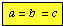

{kind=link}
![[inlinified image]](surface.jpeg)
4 - Lecture notes for GEOL3010
Nesse 74-93
Klein 189-192
Crystals are formed by the repetition of unit cells in 3-D space. Remember that the repeat of unit cells in space must be "space filling". The extent or limit of building the unit cells, is the crystal face. Therefore, the shape of a crystal face is, in part related to the shape of the unit cell.
Crystal morphology is also dependent upon the manner (i.e., rate and direction) in which the crystal grows. Mineral formation can be divided into two stages: (1) nucleation and (2) crystal growth. Nucleation and crystal growth are dependent upon the following factors:
Crystal growth involves:
Two end-member moderls for crystal growth
Transport-controlled growth - growth is limited by the rate at which ions can migrate to the surface via diffusion and advection.
Surface-reaction controlled growth - where growth is limited by the rate of reaction at the surface.
The crystal faces that develop are, in part, related to the internal structure. However, the rate of growth in different directions of crystal lattice can profoundly influence cystal shape.
Until now we have been conceptualizing the development of a pattern using a motif (i.e., objects such as a snail, comma, dots, circles, etc). We can extend this concept to the locations of atoms in space that comprise an ordered pattern within the mineral structure (i.e., lattice points or nodes).
The likelihood of developing a crystal face is related to the density of nodes within the lattice. Faces typically form along high density planes. This is because low lattice node density faces grow the fastest (i.e., you need fewer atoms per unit length). The rapid growth rate of low density faces results in the development of high density faces (i.e., the low density faces grow themselves away, leaving behind the more stable high density faces). The figure below shows a square lattice. Along the line A-B, 1 atom is encountered each unit length. Along the line A-C, an atom is not ecnounter until a distance of 1.41 unit lengths is travelled. Note that as the angles between the vector AB and the vectors AC -> AD -> AE decrease and the distance needed to reach another lattice node increases. Think now why single crystal faces are often parallel or intersect at only a few similar angles.
See example of pyrite growing to different external shapes based on stacking
of cube, stretched
cube, box, and octahedron, dodecahedron.
Crystal symmetry The existence of a well-formed crystal face indicates the occurrence of translation-free symmetry elements. In crystals with many dislocations, the faces are poorly developed or malformed. However, the size of translation-free region within a crystal may be up to 100 unit cells. This, as we will see is more than enough to be considered good internal crystallinity, but still too small to manifest an observable crystal face.
It is possible to recognize symmetry elements displayed in the morphology or shape of crystal habits (in our case, ceramic models).
Below are tables that summarize symmetry Elements, the corresponding symmetry Operations and Symbols
Four basic symmetries
| Elements | Operations | Symbols |
| 1. Axis of symmetry | Rotation (360 degrees /n) | 1, 2, 3, 4, 6 |
| 2. Center of symmetry | Inversion | i |
| 3. Mirror plane | Reflection | m |
| 4. Shift repetition | Translation |
Four additional symmetries
| Elements | Operations | Symbols | Comments |
| 5. Screw axis | Rotation x Translation | 21,31,32,41,42,43,61,62,63,64,65 |
The translational component of the operation is parallel to the axis of rotation. Its magnitude is a fraction of the unit translation in the direction of the rotation axis. There are (n-1) possible screw axes for an n-fold rotation axis, (e.g., 1 axis for 2-fold). The translational component is 1/n. |
| 6. Glide planes | Reflection x Translation | a, b, c, n, d |
The translational component is in the direction of the unit translations of the unit cell or along the diagonal of the cell. The component equals the unit translation divided by 2 (i.e., a,b,c glide =a/2. b/2. c/2). The component equals the diagonal divided by 2 {i.e., n glide =(a+b)/2, (b+c)/2), (a+c)/2 }. The component equals the diagonal divided by 4 (i.e., d glide = (a+b)/4, (b+c)/4), (a+c)/4). |
| 7. Rotoinversion axis | Rotation x Inversion | bar-4 |
Though 5 rotoinversion axes are possible bar-1, bar-2, bar-3, bar-4, bar-6, only bar-4 yields a symmetry element additional to the basic symmetry elements. Recall: bar-1 = i, bar-2 = m, bar-3= (3 x i), bar-4= unique, bar-6= 3/m = (3 x bar-2) |
| 8. Rotation and reflection | Rotation x Reflection | 2/m, 4/m 6/m |
Crystallographic axes are imaginary lines taken so as to parallel the intersection of certain crystal faces and to coincide with symmetry axes. Internally the crystallographic axes are coincident with the edges of the unit cell.
Crystal System
| System | Axial relationships | Crystal class (H-M notation) | Symmetry content |
| Triclinic |
a ≠. 90° b ≠ 90° g ≠ 90° |
1 bar-1 (i) |
none i |
| Monoclinic |
a = 90° b = 90° g ≠ 90° |
2 m 2/m |
1A2 1m i, 1A2, 1m |
| Orthorhombic |
a = 90° b = 90° g = 90° |
222 2mm 2/m2/m2/m |
3A2 1A2, 2m i, 3A2, 3m |
| Tetragonal |
a = 90° b = 90° g = 90° |
4 bar-4 4/m 422 4mm bar-42m 4/m2/m/2m |
1A4 1bar-A4 i, 1A4, m 1A4, 2A2 1A4, 4m 1bar-A4,2A2, 2m i,1A4, 4A2,5m |
| Hexagonal |
a = 90° b = 90° g = 120° |
3 bar-3 32 3m bar-32/m 6 bar-6 6/m 622 6mm bar-62m 6/m2/m2/m |
1A3 i + 1A3 1A3, 3A2 1A3, 3m i+1A3, 3A2, 3m 1A6 (1A3 + m) i, 1A6, 1m 1A6, 6A2 1A6, 6m (1A3 + m), 3A2, 3m i, 1A6, 6A2, 7m |
| Isometric |
 a = 90° b = 90° g = 90° |
23 2/m bar-3 432 bar-43/m 4/mbar-32/m |
3A2, 4A3 3A2, 3m, 4(1A3+i) 3A4, 4A3, 6A2 3bar-A4, 4A3, 6m 3A4, 4(1A3+i),6A2, 9m |
{kind=link}
{kind=link}